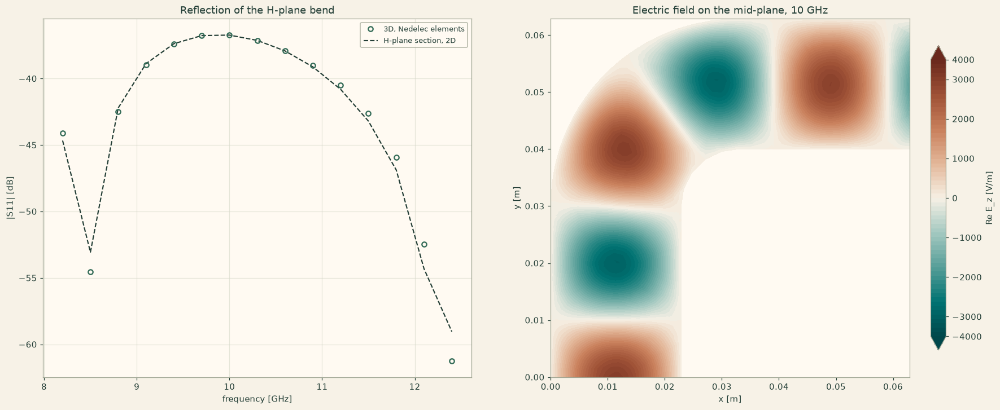
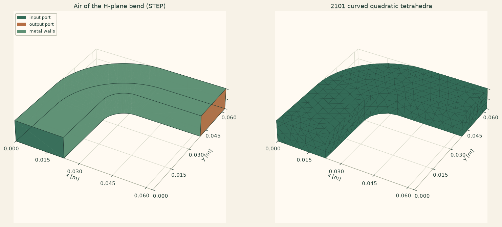

Docs › Examples › H-plane bend of a rectangular waveguide
Microwaves, waveguides · 3D
H-plane bend of a rectangular waveguide
A WR-90 rectangular waveguide turns by 90 degrees in the plane of its broad walls; the TE10 wave is followed through the bend over the X band.

What it computes
OneSimulation solves the time-harmonic Maxwell equation for the electric field in the air of the bend with second-order Nedelec elements on curved tetrahedra; the waveguide ports compute the TE10 and TE20 modes of their cross-sections, feed and absorb them and return the S-parameters from 8.2 to 12.4 GHz. As an independent cross-check, the exact 2D reduction of the H-plane structure is solved on the section of the same part. The script that builds the STEP file comes with the notebook.
What it checks
The port mode follows beta = sqrt(k0^2 - (pi/a)^2) to 4e-5 over the band; the bend reflects at most -36.7 dB (|S11| = 0.0146 at 10 GHz), the 3D and 2D results agree to 5e-4 in |S11| and 3e-3 in S21, power is conserved to 2e-14, and three meshes give |S11| = 0.01456, 0.01453, 0.01453.
Geometry
The notebook starts at the import of the CAD file waveguide_h_bend.step: STEP (AP242), readable by any CAD program, with the names of the faces that the boundary conditions use. Put it next to the notebook.

The geometry script
The script waveguide_h_bend_geometry.py builds the geometry with the CAD objects of OneSimulation and writes the file. Change a dimension there, run it, and run the notebook again.
"""Geometry of the OneSimulation example "H-plane bend of a rectangular waveguide".
Builds with the CAD objects of OneSimulation the air inside a WR-90 rectangular waveguide
(22.86 mm x 10.16 mm) that turns by 90 degrees in the plane of its broad walls: 30 mm of straight
guide along y, a circular bend with an inner wall radius of 10 mm, and 30 mm of straight guide along x.
The profile lies in the x-y plane and is extruded by the narrow side along z. Faces: port_in (y = 0),
port_out (the end of the x leg) and metal (all walls), in waveguide_h_bend.step.
"""
from onesim.cad.d2 import Path, Profile, Segment
from onesim.cad.d3 import Prism
a, b, inner, straight = 0.02286, 0.01016, 0.010, 0.030
centre = (a + inner, straight)
outline = Path(
(0.0, 0.0),
(
Segment((a, 0.0), name="port_in"),
Segment((a, straight), name="wall"),
Segment(
(a + inner, straight + inner),
center=centre,
counterclockwise=False,
name="wall",
),
Segment((a + inner + straight, straight + inner), name="wall"),
Segment((a + inner + straight, straight + inner + a), name="port_out"),
Segment((a + inner, straight + inner + a), name="wall"),
Segment((0.0, straight), center=centre, counterclockwise=True, name="wall"),
Segment((0.0, 0.0), name="wall"),
),
)
guide = Prism(profile=Profile(outline), height=b)
faces = guide.boundaries
guide.grouped(metal=faces.wall | faces.top | faces.bottom).save("waveguide_h_bend.step")The notebook
The complete notebook, cell by cell. Run it to produce the figures and the comparison printout.
A hollow rectangular waveguide of width \(a=22.86\) mm and height \(b=10.16\) mm (WR-90) carries microwaves of the X band, 8.2 to 12.4 GHz. In this band only the TE\(_{10}\) wave propagates: its electric field has a single component, across the narrow side, with a half sine over the width and zeros at the side walls. To route the guide, it is bent by 90° in the plane of the broad walls (an H-plane bend: the magnetic field lines lie in the plane of the bend). A smooth bend with an inner wall radius of 10 mm reflects only a small part of the wave.
OneSimulation solves the time-harmonic Maxwell equation for the electric field in the air of the guide,
with second-order Nédélec elements on curved tetrahedra. Each waveguide port computes the modes of its cross-section, feeds or absorbs them exactly and returns the S-parameters.
| faces | condition | |---|---| | port_in | waveguide port, TE\(_{10}\) fed with 1 W, TE\(_{20}\) absorbed | | port_out | waveguide port, TE\(_{10}\) and TE\(_{20}\) absorbed | | metal (all walls) | perfect electric conductor |
The air comes from the CAD file waveguide_h_bend.step, written by waveguide_h_bend_geometry.py with the CAD objects of OneSimulation.
Reference (D. M. Pozar, Microwave Engineering, 4th ed., Wiley 2012, §3.3; N. Marcuvitz, Waveguide Handbook, §5.31). The TE\(_{10}\) wave has the propagation constant
and TE\(_{20}\) starts to propagate only at \(c/a=13.11\) GHz. The bend has no closed form, but in an H-plane structure the TE\(_{n0}\) fields do not vary across the height: the 3D problem reduces exactly to the scalar Helmholtz equation for \(E_z\) on the H-plane section, with the side walls as \(E_z=0\). That 2D computation, with a different element and its own ports, is the independent cross-check of the 3D bend. A lossless bend also conserves power, \(|S_{11}|^2+|S_{21}|^2=1\).
import numpy as np
from onesim.cad.d2 import Plane
from onesim.cad.exchange import load
from onesim.materials import VACUUM_PERMEABILITY, VACUUM_PERMITTIVITY
from onesim.materials.electromagnetic import IsotropicElectromagneticMaterial
from onesim.meshing import TetrahedralMesher, TriangularMesher
from onesim.numerics import Numerics
from onesim.numerics.fem import FiniteElement, Lagrange, Nedelec
from onesim.numerics.linear import ComplexSparseDirect
from onesim.physics.electromagnetics import (
FrequencyDomainMaxwell,
PerfectElectricConductor,
SectionWaveguidePort,
port_modes,
scattering_parameters,
)
from onesim.simulation import Problem, Simulation
from onesim.visualization import plots, theme
theme.set()
light = 1 / np.sqrt(VACUUM_PERMEABILITY * VACUUM_PERMITTIVITY)Geometry and mesh
load reads the air of the bend with its named faces; section at half height gives the H-plane section for the cross-check, whose sides keep the face names. The 3D meshes have quadratic (curved) tetrahedra of 4, 3 and 2.2 mm, about six to eleven per wavelength at 12.4 GHz; the 4 mm mesh carries the frequency sweep. The section gets triangles of 0.8 mm.
guide = load("waveguide_h_bend.step")
faces = guide.boundaries
width, height = 0.02286, guide.size[2]
section = guide.section((0, 0, 1), origin=(0, 0, height / 2))
sizes = (0.004, 0.003, 0.0022)
meshes = {
h: TetrahedralMesher(target_size=h, geometry_order=2).generate(guide) for h in sizes
}
section_mesh = TriangularMesher(target_size=0.0008).generate(section)
view = plots.Camera(elevation=35, azimuth=-60)
fig = plots.figure(1, 2, size=(14, 6))
plots.geometry(
guide,
selection={
"input port": faces.port_in,
"output port": faces.port_out,
"metal walls": faces.metal,
},
labels=False,
camera=view,
title="Air of the H-plane bend (STEP)",
ax=fig[0],
)
plots.mesh(
meshes[sizes[0]],
groups=("all",),
legend=False,
camera=view,
title=f"{meshes[sizes[0]].cell_count} curved quadratic tetrahedra",
ax=fig[1],
)
plots.show()Model
model builds the Maxwell model for a frequency, in 3D or on the section (polarization \(E_z\)); solve adds the two ports and the metal walls. The sweep runs from 8.2 to 12.4 GHz in steps of 0.3 GHz, in 3D and on the section.
model = lambda frequency, domain, options: FrequencyDomainMaxwell(
domain=domain,
frequency=frequency,
material=IsotropicElectromagneticMaterial(),
phasor_convention="exp(-i*omega*t)",
amplitude_convention="peak",
**options,
)
solve = lambda m, part, mesh, element: Simulation(
problem=Problem(
name="H-plane bend",
geometry=part,
physics=(m,),
boundary_conditions=(
SectionWaveguidePort(
physics=m, boundary=part.boundaries.port_in, modes=2, incident_power=1.0
),
SectionWaveguidePort(physics=m, boundary=part.boundaries.port_out, modes=2),
PerfectElectricConductor(physics=m, boundary=part.boundaries.metal),
),
),
mesh=mesh,
numerics=Numerics(
spatial=FiniteElement(element=element), linear_solver=ComplexSparseDirect()
),
).solve_stationary()
in_3d = lambda frequency, h: (
r := solve(
m := model(frequency, guide.volume, {}), guide, meshes[h], Nedelec(order=2)
),
m,
)
on_section = lambda frequency: (
r := solve(
m := model(frequency, section.domain(), {"polarization": "Ez"}),
section,
section_mesh,
Lagrange(order=2),
),
m,
)
frequencies = np.arange(8.2e9, 12.41e9, 0.3e9)
runs = {f: in_3d(f, sizes[0]) for f in frequencies}
sweep = {
"3D": {f: scattering_parameters(*run) for f, run in runs.items()},
"section": {f: scattering_parameters(*on_section(f)) for f in frequencies},
}
study = {h: scattering_parameters(*in_3d(10e9, h)) for h in sizes}Results
The propagation constant of the computed port mode against the closed form, the reflection and transmission of the bend in 3D and on the section, the power balance, and the mesh study at 10 GHz.
exact_beta = lambda f: np.sqrt((2 * np.pi * f / light) ** 2 - (np.pi / width) ** 2)
beta = {f: port_modes(*run)[0]["propagation_constant"] for f, run in runs.items()}
print(
"port mode TE10: largest relative deviation of beta from sqrt(k0^2 - (pi/a)^2) over the band "
f"{max(abs(b[0].real / exact_beta(f) - 1) for f, b in beta.items()):.1e}; second port mode evanescent at every frequency: "
f"{all(abs(b[1].real) < 1e-6 * abs(b[1]) for b in beta.values())}"
)
print(
"f [GHz] |S11| 3D |S11| section |S21| 3D arg S21 3D [°] arg S21 section [°] |S11|^2 + |S21|^2 - 1 (3D)"
)
for f in frequencies:
s, t = sweep["3D"][f], sweep["section"][f]
print(
f"{f / 1e9:7.1f} {abs(s[(0, 0)]):10.5f} {abs(t[(0, 0)]):15.5f} {abs(s[(1, 0)]):10.6f} {np.degrees(np.angle(s[(1, 0)])):16.2f} "
f"{np.degrees(np.angle(t[(1, 0)])):21.2f} {abs(s[(0, 0)]) ** 2 + abs(s[(1, 0)]) ** 2 - 1:28.1e}"
)
print(
f"largest difference 3D - section over the band: |S11| {max(abs(abs(sweep['3D'][f][(0, 0)]) - abs(sweep['section'][f][(0, 0)])) for f in frequencies):.1e}, "
f"S21 {max(abs(sweep['3D'][f][(1, 0)] - sweep['section'][f][(1, 0)]) for f in frequencies):.1e}"
)
print("mesh study at 10 GHz: cell size [mm] tetrahedra |S11| arg S21 [°]")
for h, s in study.items():
print(
f"{1e3 * h:36.1f} {meshes[h].cell_count:12d} {abs(s[(0, 0)]):9.6f} {np.degrees(np.angle(s[(1, 0)])):12.3f}"
)Figure
Left: the reflection of the bend in decibels over the band, 3D against the section. Right: the instantaneous field \(E_z\) on the mid-plane of the guide at 10 GHz (3 mm tetrahedra), with colour limits just above the TE\(_{10}\) peak field of 1 W, \(E_0=\sqrt{4Z_{TE}P/(ab)}\) with \(Z_{TE}=\eta_0k_0/\beta\): the wave turns around the bend with a half sine across the width.
picture = solve(
m := model(10e9, guide.volume, {}),
guide,
TetrahedralMesher(target_size=0.003).generate(guide),
Nedelec(order=2),
)
field = picture.field(m.electric_field)
peak = np.sqrt(
4
* np.sqrt(VACUUM_PERMEABILITY / VACUUM_PERMITTIVITY)
* (2 * np.pi * 10e9 / light)
/ exact_beta(10e9)
/ (width * height)
)
dB = lambda runs: np.array([20 * np.log10(abs(runs[f][(0, 0)])) for f in frequencies])
fig = plots.figure(1, 2, size=(16, 6.5))
plots.line(
points={"3D, Nedelec elements": (frequencies / 1e9, dB(sweep["3D"]))},
reference={"H-plane section, 2D": (frequencies / 1e9, dB(sweep["section"]))},
xlabel="frequency [GHz]",
ylabel="|S11| [dB]",
title="Reflection of the H-plane bend",
legend="upper right",
ax=fig[0],
)
plots.section(
field,
plane=Plane(origin=(0, 0, height / 2), normal=(0, 0, 1)),
component=lambda E, p: np.real(E[:, 2]),
colormap="diverging",
limits=(-500 * np.ceil(peak / 450), 500 * np.ceil(peak / 450)),
subdivisions=2,
label="Re E_z [V/m]",
title="Electric field on the mid-plane, 10 GHz",
ax=fig[1],
)
plots.show()Going further
Set the inner radius in waveguide_h_bend_geometry.py to zero for a sharp corner, which reflects far more, or swap \(a\) and \(b\) in the profile and the extrusion to bend the guide in the plane of its narrow walls (an E-plane bend): that bend has no 2D reduction and needs the 3D model.